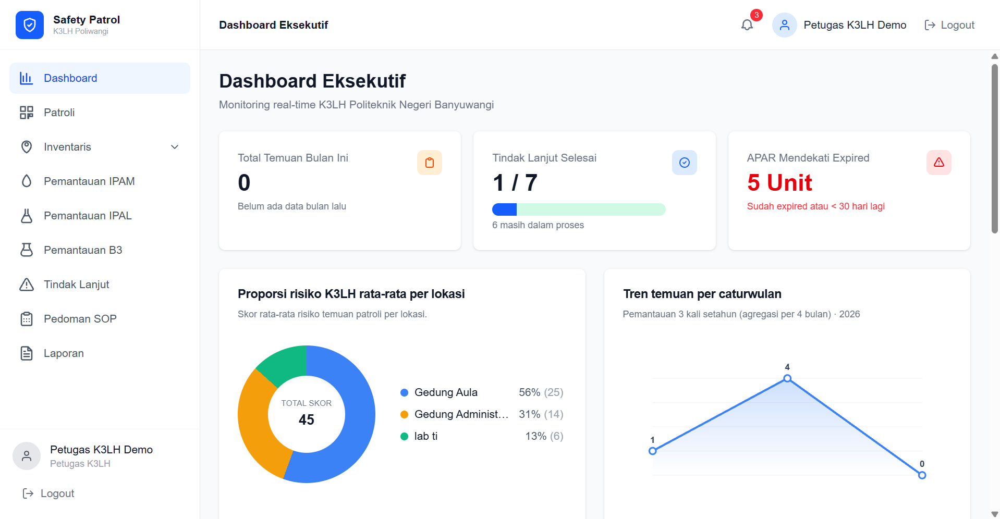
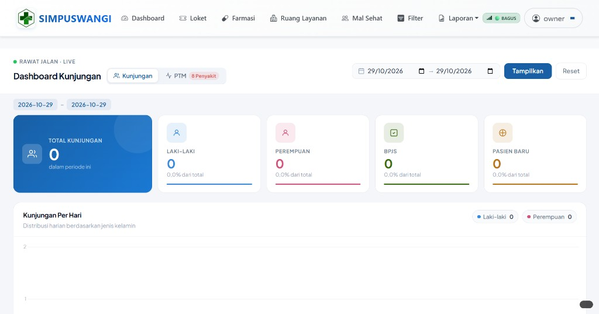
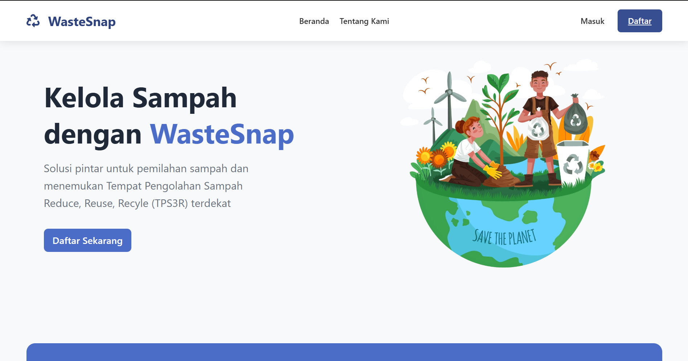
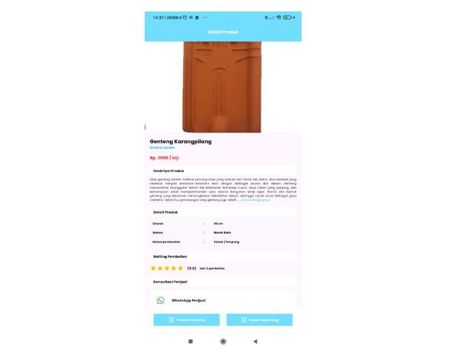
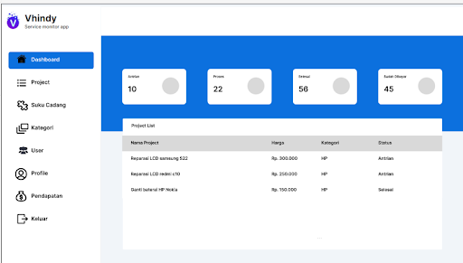
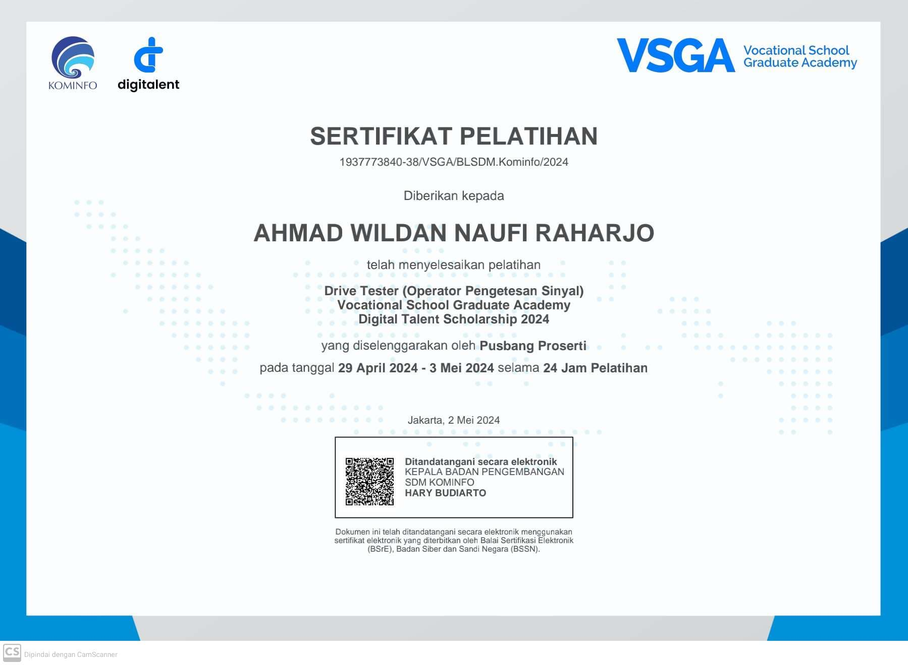
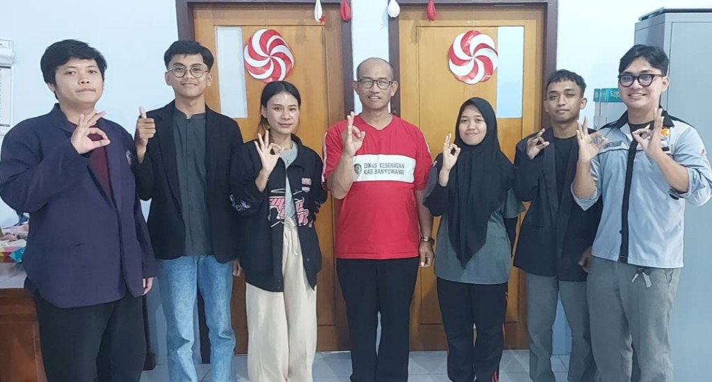
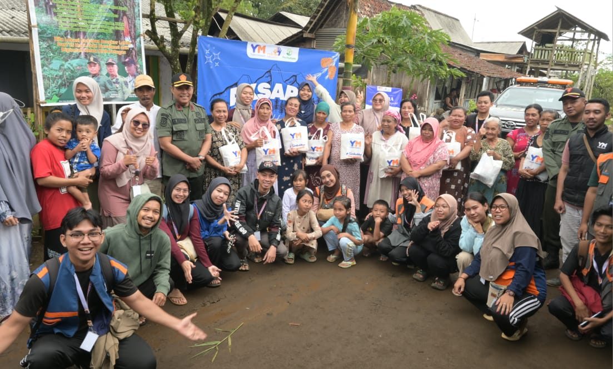
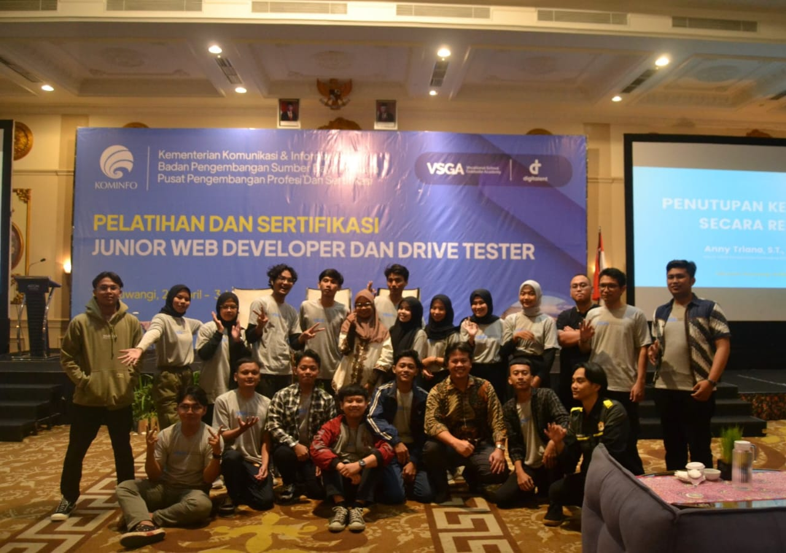
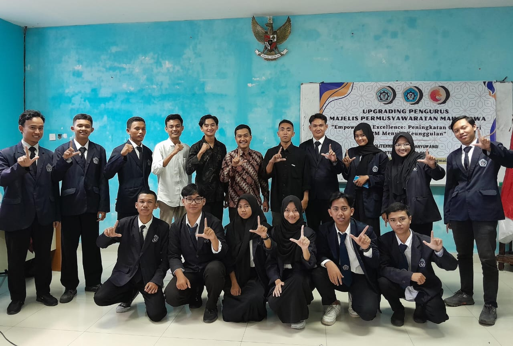

Pendidikan
D4 TRPL · Politeknik Negeri Banyuwangi (2026)
Fullstack Developer
Lulusan D4 Teknologi Rekayasa Perangkat Lunak, Politeknik Negeri Banyuwangi. Saya membangun aplikasi web dan mobile yang rapi, berguna, dan siap dipakai — dari frontend hingga backend.
Tentang saya
Saya lulusan D4 Teknologi Rekayasa Perangkat Lunak, Politeknik Negeri Banyuwangi. Pekerjaan saya merancang dan membangun aplikasi web dari antarmuka sampai API: migrasi sistem puskesmas, dashboard operasional, hingga produk mobile.
Di software house saya mengerjakan situs klien dengan WordPress. Di Dinas Kesehatan Banyuwangi saya membantu migrasi SIMPUSWANGI ke Laravel dan Vue.js. Tugas akhir saya, Safety Patrol K3LH, saya kerjakan sendiri sebagai fullstack.
D4 TRPL · Politeknik Negeri Banyuwangi (2026)
Laravel, Vue, React, Node.js, dan Flutter
Mandiri di tugas akhir, kolaborasi di magang dan tim produk
Keahlian
Karya

Tugas akhir · Fullstack solo
Sistem web untuk digitalisasi inspeksi K3LH di Politeknik Negeri Banyuwangi. Petugas scan QR lokasi/APAR, mencatat temuan, memantau IPAM, IPAL, dan limbah B3, menindaklanjuti insiden, lalu mengunduh laporan Word/Excel. Multi-role: Petugas K3LH, Kalab, Satpam, dan Pimpinan.

Magang · Laravel & Vue.js
Sistem Informasi Puskesmas Kabupaten Banyuwangi untuk layanan kunjungan, loket, farmasi, dan ruang layanan. Saya ikut memigrasikan modul Ruang Layanan Kunjungan Sakit dari CodeIgniter 3 ke Laravel dan Vue.js, termasuk pembaruan dashboard kunjungan harian agar data pasien lebih mudah dipantau.


Aplikasi mobile
Aplikasi jual beli genteng yang memudahkan pembeli dan penjual bertransaksi serta berkomunikasi dalam satu platform.

Website layanan
Website pemantauan servis HP dan laptop. Pelanggan mitra dapat mengikuti progres perbaikan secara transparan tanpa harus bertanya berulang kali.
Kredensial
Dicoding
22 April 2025
Lihat sertifikatDicoding
12 Maret 2025
Lihat sertifikatDicoding
1 Maret 2025
Lihat sertifikatDicoding
25 Februari 2025
Lihat sertifikatDicoding
23 Februari 2025
Lihat sertifikatDicoding
16 Februari 2025
Lihat sertifikat
Kominfo · Digital Talent
2024
Riwayat

Magang kerja industri. Migrasi dan pembaruan fitur Ruang Layanan Kunjungan Sakit pada aplikasi SIMPUSWANGI dari CodeIgniter 3 ke Laravel dan Vue.js. Bekerja sama dengan tim pada pengembangan dan pengujian fitur.
Magang kerja industri. Membuat template website dan mengembangkan situs berbasis WordPress sesuai kebutuhan klien.

Relawan pada kegiatan AKSARA bersama Yatim Mandiri Banyuwangi dan Perhutani. Fokus pada pendidikan, pengembangan karakter, dan kegiatan sosial.
Baca selengkapnya
Pelatihan Drive Tester Kominfo: jaringan 2G–5G dan pengukuran kualitas sinyal dengan alat seperti TEMS.

Membangun relasi dengan mitra eksternal, mengelola kerja sama strategis, dan mewakili organisasi di beberapa forum.
Kontak